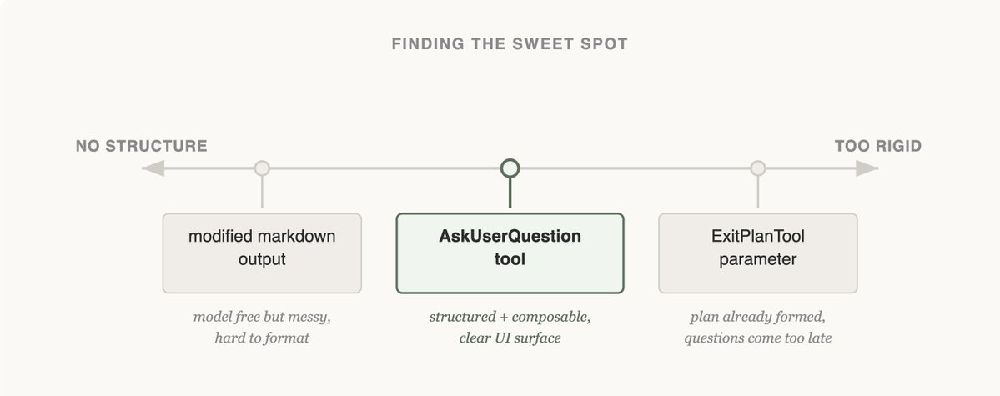
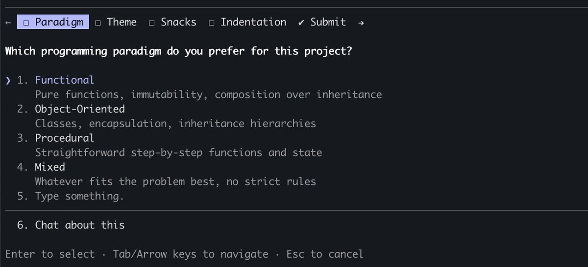
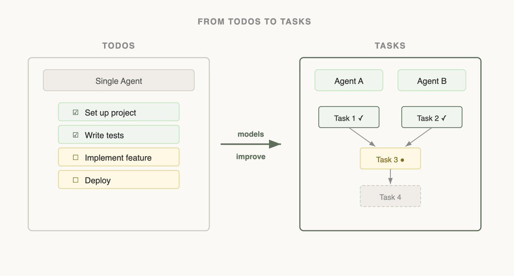

Claude Code 팀이 모델의 관점에서 생각하며 도구를 설계하고, 테스트하고, 발전시켜 온 방법을 소개한다.
에이전트 하네스(harness)를 만들 때 가장 어려운 부분 중 하나는 그 도구(tool)를 구성하는 일이다.
Claude는 전적으로 도구 호출(tool calling)을 통해 행동한다. 그런데 Claude API에서 도구를 구성하는 방법은 여러 가지가 있다. bash, skills, code execution 같은 기본 요소(primitive)가 그 예다. (Claude API의 프로그래밍 방식 도구 호출에 대해서는 @RLanceMartin의 새 글에서 더 읽어볼 수 있다.)
그렇다면 에이전트의 도구를 어떻게 설계해야 할까? bash나 code execution 같은 범용 도구 하나를 주어야 할까? 아니면 쓰임새마다 하나씩, 전문화된 도구 50개를 주어야 할까?
모델의 입장에 서 보기 위해, 어려운 수학 문제를 받았다고 상상해 보자. 그 문제를 풀기 위해 어떤 도구를 갖고 싶은가? 그것은 여러분 자신의 능력에 달려 있다!
종이가 최소한의 도구겠지만, 손으로 계산해야 하니 한계가 있다. 계산기가 더 낫겠지만, 고급 기능을 다루는 법을 알아야 한다. 가장 빠르고 강력한 선택지는 컴퓨터겠지만, 코드를 쓰고 실행하는 법을 알아야만 쓸 수 있다.
이것은 에이전트를 설계할 때 유용한 사고 틀이다. 에이전트의 능력에 맞게 모양이 잡힌 도구를 주어야 한다. 하지만 그 능력이 무엇인지 어떻게 알 수 있을까? 주의 깊게 관찰하고, 출력을 읽고, 실험하는 것이다. 그렇게 에이전트처럼 보는 법을 배우게 된다.
에이전트를 만들고 있다면 우리가 마주한 것과 같은 질문을 마주하게 될 것이다. 언제 도구를 추가할지, 언제 제거할지, 그리고 그 둘을 어떻게 구분할지. 여기서는 우리가 Claude Code를 만들며 이 질문에 어떻게 답해 왔는지, 처음에 어디서 틀렸는지까지 포함해 소개한다.

AskUserQuestion 도구를 만들 때 우리의 목표는 Claude가 질문하는 능력(흔히 elicitation이라고 부른다)을 개선하는 것이었다.
Claude가 그냥 평문으로 질문할 수도 있었지만, 그 질문에 답하는 일이 불필요하게 많은 시간을 잡아먹는다고 느꼈다. 이 마찰을 어떻게 줄이고, 사용자와 Claude 사이 소통의 대역폭을 어떻게 넓힐 수 있을까?
처음 시도한 방법은 ExitPlanTool에 파라미터를 하나 추가해, 계획과 함께 질문 배열을 담게 하는 것이었다. 구현하기에는 가장 쉬운 수정이었지만, 계획과 그 계획에 대한 질문 묶음을 동시에 요구하는 셈이어서 Claude를 혼란스럽게 했다. 사용자의 답이 계획 내용과 충돌하면 어떻게 되는가? Claude가 ExitPlanTool을 두 번 호출해야 하는가? 이 방식은 통하지 않으리라는 것을 알았고, 다시 처음으로 돌아갔다. (ExitPlanTool을 만든 이유는 프롬프트 캐싱에 관한 우리 글에서 더 읽어볼 수 있다.)
다음으로는 Claude의 출력 지침을 바꿔, 질문을 할 때 쓸 수 있는 살짝 변형된 마크다운 형식을 내도록 해 보았다. 예를 들어 질문을 글머리 기호 목록으로 쓰고 선택지를 대괄호 안에 넣어 출력하라고 요청할 수 있다. 그러면 우리가 그 질문을 파싱해 사용자용 UI로 포맷할 수 있다.
Claude는 대개 이 형식을 만들어 냈지만, 안정적이지는 않았다. 문장을 덧붙이거나, 선택지를 빠뜨리거나, 구조를 아예 버리기도 했다. 다음 방법으로 넘어갔다.

마지막으로 우리는 Claude가 언제든 호출할 수 있되, 특히 plan mode에서 호출하도록 프롬프트된 도구를 만드는 데 안착했다. 이 도구가 발동되면 질문을 보여주는 모달을 띄우고, 사용자가 답할 때까지 에이전트 루프를 멈춘다.
이 도구 덕분에 Claude에게 구조화된 출력을 요구할 수 있었고, Claude가 사용자에게 여러 선택지를 제시하도록 보장하는 데 도움이 됐다. 또한 사용자가 이 기능을 조합해 쓸 수 있는 길도 열렸다. 예를 들어 Agent SDK에서 호출하거나 skills 안에서 참조하는 식이다.
무엇보다 Claude가 이 도구를 호출하는 것을 좋아하는 듯했고, 그 출력도 잘 동작한다는 것을 확인했다. 결국 아무리 잘 설계된 도구라도 Claude가 어떻게 호출하는지 이해하지 못하면 소용이 없다.
이것이 Claude Code에서 질문 기능의 최종 형태일까? 그렇지 않을 것이다. Claude가 더 유능해질수록 Claude를 돕는 도구도 함께 진화해야 한다. 다음 절에서는 한때 도움이 되던 도구가 오히려 방해가 되기 시작한 사례를 보여준다.

Claude Code를 처음 출시했을 때, 우리는 모델이 궤도를 벗어나지 않으려면 투두 리스트(todo list)가 필요하다는 것을 알게 됐다. 투두는 시작할 때 적어 두고, 모델이 작업을 진행하면서 하나씩 체크해 나갈 수 있다. 이를 위해 Claude에게 TodoWrite 도구를 주었다. 투두를 쓰거나 갱신하고 사용자에게 보여주는 도구다.
그런데도 Claude가 해야 할 일을 잊어버리는 모습을 자주 봤다. 이에 대응해 우리는 5턴마다 Claude에게 목표를 상기시키는 시스템 리마인더를 끼워 넣었다.
모델이 발전하자, 모델은 투두 리스트를 제약으로 느끼기 시작했다. 투두 리스트 리마인더를 받으면 Claude는 방향을 바꿔야 한다는 것을 깨달았을 때 리스트를 수정하는 대신 리스트에 매달려야 한다고 생각했다. 또 Opus 4.5가 서브에이전트(subagent)를 훨씬 잘 쓰게 된 것도 보았는데, 그렇다면 서브에이전트들은 공유 투두 리스트에서 어떻게 협력할 수 있을까?
이를 보고 우리는 TodoWrite 기능을 Task 도구로 교체했다. 투두가 모델을 궤도에 붙들어 두는 데 초점을 둔다면, 태스크는 에이전트들이 서로 소통하도록 돕는다. 태스크에는 의존성을 넣을 수 있고, 서브에이전트 간에 갱신 내용을 공유할 수 있으며, 모델이 태스크를 바꾸거나 삭제할 수도 있다.
모델 능력이 높아지면, 한때 모델에게 필요했던 도구가 이제는 모델을 제약하고 있을 수 있다. 어떤 도구가 필요한지에 대한 이전 가정을 끊임없이 다시 점검하는 것이 중요하다. 지원할 모델을 능력 프로필이 꽤 비슷한 소수로 한정하는 것이 유용한 이유이기도 하다.
우리가 만든 도구 중 가장 큰 영향을 미친 것은 Claude가 스스로 컨텍스트를 찾게 해 주는 도구들이다.
Claude Code를 사내에 처음 공개했을 때 우리는 RAG를 썼다. 벡터 데이터베이스가 코드베이스를 미리 인덱싱하고, 하네스가 관련 스니펫을 검색해 매 응답 전에 Claude에게 건네주는 방식이었다. RAG는 강력하고 빨랐지만 인덱싱과 설정이 필요했고, 다양한 환경에서는 깨지기 쉬웠다. 무엇보다 Claude가 컨텍스트를 스스로 찾는 것이 아니라 받는 구조였다.
그런데 Claude가 웹을 검색할 수 있다면, 왜 여러분의 코드베이스는 검색하지 못하는가? Claude에게 Grep 도구를 주면 스스로 파일을 찾고 컨텍스트를 쌓게 할 수 있었다.
Claude가 똑똑해질수록, 알맞은 도구만 주어지면 스스로 컨텍스트를 쌓는 능력도 점점 좋아진다.
Agent Skills를 도입하면서 우리는 점진적 공개(progressive disclosure)라는 개념을 공식화했다. 에이전트가 탐색을 통해 관련 컨텍스트를 점진적으로 발견하게 하는 방식이다.
이제 Claude는 skill 파일을 읽을 수 있고, 그 파일은 모델이 재귀적으로 읽을 수 있는 다른 파일을 참조할 수 있다. 실제로 skills의 흔한 용도 중 하나는 Claude에게 검색 능력을 더 얹어 주는 것이다. API를 쓰는 법이나 데이터베이스를 질의하는 법을 지침으로 주는 식이다.
1년 사이에 Claude는 스스로 컨텍스트를 거의 쌓지 못하던 상태에서, 여러 층의 파일을 가로질러 중첩 검색을 하며 정확히 필요한 컨텍스트를 찾아내는 수준으로 발전했다.
점진적 공개는 이제 우리가 도구를 추가하지 않고 새 기능을 더할 때 흔히 쓰는 기법이다. 다음 절에서 그 이유를 설명한다.
Claude Code에는 현재 약 20개의 도구가 있고, 우리 팀은 Claude가 가장 효과적으로 일하기 위해 그 도구가 전부 필요한지 자주 재검토한다. 새 도구를 추가하는 기준은 높다. 모델이 고민해야 할 선택지가 하나 더 늘기 때문이다.
예를 들어 우리는 Claude가 Claude Code 사용법을 충분히 알지 못한다는 것을 알아챘다. MCP를 추가하는 법이나 슬래시 명령이 무엇을 하는지 물으면 답하지 못했다.
이 정보를 전부 시스템 프롬프트에 넣을 수도 있었다. 하지만 사용자가 이런 질문을 거의 하지 않는다는 점을 생각하면, 컨텍스트 부패(context rot)를 더하고 Claude Code의 본업인 코드 작성에 방해만 됐을 것이다.
대신 점진적 공개를 시도했다. Claude에게 필요할 때 불러와 검색할 수 있는 문서 링크를 준 것이다. 이 방법은 통했지만, 사용자가 한 문장으로 얻을 수 있었을 답을 찾기 위해 Claude가 문서의 큰 덩어리를 컨텍스트로 끌어오곤 했다.
그래서 우리는 Claude Code Guide를 만들었다. 사용자가 Claude Code 자체에 대해 물을 때마다 Claude가 호출하는 서브에이전트다. 이 서브에이전트는 자기 컨텍스트 안에서 문서 검색을 하고, 어떻게 검색하고 무엇을 추출할지에 대한 상세한 지침을 따르며, 답만 돌려준다. 메인 에이전트의 컨텍스트는 깨끗하게 유지된다.
완벽한 해법은 아니지만(자기 자신을 설정하는 법을 물으면 Claude가 여전히 헷갈릴 수 있다), 새 도구를 추가하지 않고도 Claude의 행동 공간(action space)을 넓힐 수 있었다.
모델을 위한 도구를 설계하는 일은 과학인 만큼이나 예술이다. 어떤 모델을 쓰는지, 에이전트의 목표가 무엇인지, 어떤 환경에서 동작하는지에 크게 좌우된다.
우리의 최선의 조언은? 자주 실험하고, 출력을 읽고, 새로운 것을 시도하라. 그리고 무엇보다, 에이전트처럼 보려고 노력하라.
지금 Claude Code를 시작해 보세요.
글쓴이 소개: Thariq Shihipar는 Anthropic의 기술 스태프(member of technical staff)로, Claude Code를 만들고 있습니다.